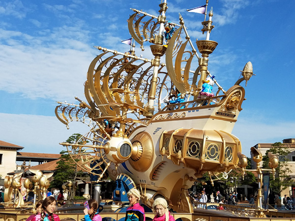
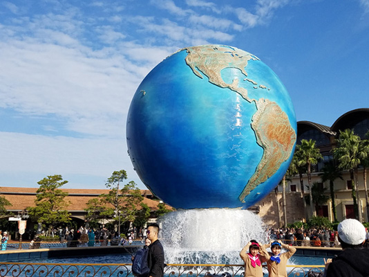
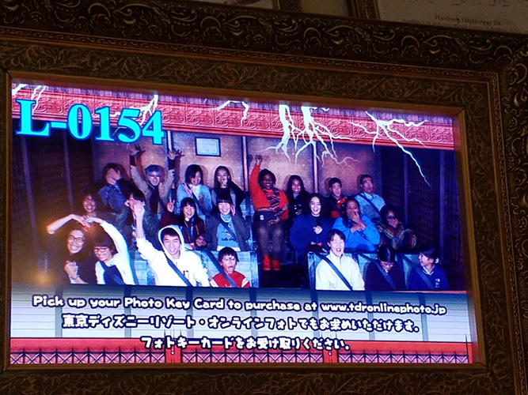

DisneySea
Inside the Theme Park
In October 2016 my friends and I decided it was time to visit one of the Disney theme parks located in Tokyo. Since at the time we all lived on the outskirts of Tokyo for study abroad. We figured that it would be fairly easy to go. We decided to go on Halloween since it was sortof a holiday. We met at 5 am near where I lived at the time it would take a one hour train ride standing the enitre way to the Yokohama station where we would get on a charter bus and ride for another hour to get there.
Beautiful on the inside
Once inside the park its beautiful. Right at the entrance there is a big golden ship crewed by Donald Duck's nephews Huey, Dewey and Louis. a very large globe. We were also greeted by a street performance to the left of the entrance. We paused for a few minutes to watch before continuing on to find the first ride we wanted to take. Unfortunately for us alot of the rides were not open when we went. We did however get to ride on the Tower of Terror after waiting well over an hour just to get inside of the building and almost another hour to get on the actual ride.
What rides were open you ask?
When my friends and I went none of the rides that featured water were open. We did get to ride on the Indiana Jones Adventure: Temple of the Crystal Skull and I'll say it was a fun ride. The line for it however was not. My friends and I we split up earlier in the day because two of our group were willing to wait in line to ride Raging Spirits but the ideal of spending another two hours in line for a ride because we couldn't get another fast pass yet was not attractive at all. Unfortunately, the ride Journey to the Center Of the Earth was closed as well. It wasn't until much later that I learned that Disney does post which rides in their parks are closed, when the ride is closed and how long.
Shopping...
Going into any of the shops turned into an adventure. The shops were full of all kinds of Disney merch you expect to see. Tokyo Disney also has merch for characters that are popular in Tokyo Disney Sea like Duffy the bear and all his friends. All the shops were overcrowded with people looking for their favorite characters merch. Even if you found something you might want the lines to buy it seemed to be just as long as the ride lines.
Tokyo DisneySea
1-13 Maihama
Urayasu, Chiba
279-0031, Japan